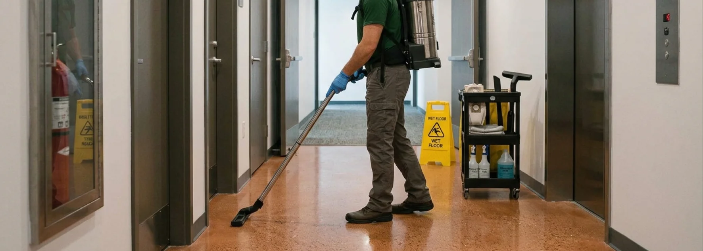

- Services couverts : parties communes, extérieurs, poubelles, petits travaux, déneigement
- Fourchettes indicatives : 45 à 90 CHF par appartement/mois pour un contrat PPE standard
- 3 critères clés : couverture complète, prix fixe écrit, souplesse contractuelle
- Différenciateur : entreprise locale familière des régies vaudoises et fribourgeoises
- Charges PPE : la conciergerie est répartie selon les millièmes (art. 712h CC)
Qu'est-ce qu'une conciergerie d'immeuble ou PPE
La conciergerie d'immeuble regroupe l'ensemble des prestations d'entretien nécessaires au bon fonctionnement d'un immeuble locatif ou d'une PPE (Propriété Par Étages). Elle couvre :
- Le nettoyage régulier des parties communes (halls, escaliers, couloirs, ascenseurs)
- L'entretien des extérieurs (allées, terrasses communes, entrées)
- La gestion des déchets (sortie et rentrée des poubelles, nettoyage des locaux)
- Les petits travaux courants (ampoules, réglages, contrôles visuels)
- Le déneigement et le salage en hiver
- Les vitres des parties communes (halls, cages d'escalier)
En Suisse, deux modèles principaux existent : le concierge salarié de l'immeuble (souvent logé sur place) ou l'externalisation à une entreprise de conciergerie. Le second modèle domine désormais pour les petites et moyennes copropriétés, en raison de sa souplesse et de l'absence de charges d'employeur.
Les prestations proposées par une entreprise de conciergerie complète
Toutes les entreprises ne se valent pas. Une conciergerie professionnelle propose l'intégralité des prestations suivantes, idéalement dans un contrat unique.
Nettoyage des parties communes intérieures
- Halls d'entrée et paillassons
- Escaliers, mains courantes, rampes
- Couloirs, portes palières, sonnettes
- Ascenseurs (cabines, boutons, portes)
- Locaux communs (buanderies, caves communes)
Nettoyage des vitres des parties communes
Les cages d'escalier vitrées, les portes d'entrée vitrées et les fenêtres de halls demandent un entretien régulier, souvent négligé dans les contrats standards mais essentiel pour l'image de l'immeuble.
Entretien des extérieurs
- Allées d'accès et trottoirs privatifs
- Terrasses communes et espaces verts délimités
- Entrées et zones d'affichage
- Feuilles mortes en saison
Gestion des déchets et locaux poubelles
- Sortie des containers aux jours de collecte
- Rentrée après passage des éboueurs
- Nettoyage régulier des locaux poubelles
- Gestion des encombrants sur demande
Petits travaux et contrôles visuels
- Changement d'ampoules
- Réglages mineurs (portes, minuteries)
- Contrôle visuel des installations (éclairage, ventilation, ascenseurs)
- Signalement des anomalies à la régie
Déneigement et salage en hiver
Une prestation critique en Suisse, où la responsabilité en cas d'accident (chute d'un locataire, glissade d'un visiteur) peut engager gravement la régie ou la PPE. Un contrat de conciergerie sérieux inclut cette prestation avec réactivité rapide en cas de chute de neige.
La conciergerie complète de votre immeuble ou PPE, en un seul contrat
Un interlocuteur direct · Équipes locales · Références régies sur demande
Voir le service régulier →Combien coûte une conciergerie d'immeuble ou PPE
Les tarifs varient selon la taille de l'immeuble, la fréquence des passages et les prestations incluses. Voici les ordres de grandeur observés sur le marché suisse romand.
| Type de facturation | Fourchette indicative |
|---|---|
| Forfait par appartement (contrat PPE) | 45 – 90 CHF/appartement/mois |
| Forfait mensuel global (immeuble locatif) | Selon nombre d'unités et surface |
| Tarif horaire (interventions ponctuelles) | 35 – 65 CHF/heure |
| Déneigement (par intervention) | Variable selon surface et urgence |

Concierge salarié ou entreprise externalisée : que choisir
C'est la question centrale des régies et copropriétés. Les deux modèles ont leur intérêt selon la taille de l'immeuble.
| Critère | Concierge salarié | Entreprise externalisée |
|---|---|---|
| Charges administratives | Employeur (AVS, LPP, assurances) | Aucune, facture unique |
| Charges sociales | À payer par la copropriété | Incluses dans la facture |
| Continuité en cas d'absence | Aucun remplacement automatique | Équipe de remplacement garantie |
| Souplesse de résiliation | Préavis légal (1-3 mois) | Généralement 1 mois |
| Coût comparatif | Souvent plus élevé (charges) | Souvent plus compétitif |
| Rôle social / lien locataires | Fort (surtout si logé sur place) | Variable selon prestataire |
| Idéal pour | Grands immeubles (50+ unités) | Petites et moyennes copropriétés |
Point important souvent oublié : avec une entreprise externalisée, la régie ou la PPE n'a aucune obligation d'employeur : pas de charges sociales à payer, pas de gestion administrative des salaires, pas de risque en cas d'accident du travail. Cette économie administrative est un des principaux moteurs de l'externalisation.
Les 5 critères pour bien choisir son entreprise de conciergerie
1. La couverture complète des prestations
Vérifiez que le contrat couvre tous les besoins de l'immeuble en un seul mandat : parties communes, extérieurs, poubelles, petits travaux, déneigement. Un contrat morcelé (plusieurs prestataires pour différentes tâches) génère complexité administrative et surcoûts.
2. La transparence tarifaire
- Prix fixe écrit (pas une fourchette « à partir de »)
- Détail des prestations poste par poste
- Fréquence clairement indiquée
- Mention explicite de ce qui est inclus (produits, matériel, déplacement) et de ce qui est en supplément
3. La souplesse contractuelle
Un contrat de conciergerie sérieux offre :
- Sans engagement de longue durée (résiliation généralement à 1 mois)
- Conditions de résiliation claires et symétriques
- Adaptation possible des prestations en cours de contrat
- Aucune clause pénale abusive
4. La fiabilité administrative et assurantielle
- Numéro IDE (CHE-xxx.xxx.xxx) au registre du commerce suisse
- Assurance RC professionnelle avec plafonds explicites
- Personnel déclaré avec contrats légaux
- TVA mentionnée sur devis et factures
5. Les références auprès de régies et syndics
Une entreprise sérieuse peut fournir des références de régies ou syndics avec lesquels elle collabore déjà. C'est le meilleur indicateur de sérieux et de continuité.
Ce que doit contenir un bon contrat de conciergerie
Un contrat de conciergerie clair et complet protège autant la régie ou la PPE que le prestataire. Voici les clauses essentielles.
- Identification précise des parties (raison sociale, numéro IDE, représentants)
- Description détaillée des prestations (liste, fréquence, périmètre exact)
- Modalités de rémunération (forfait, tarif horaire pour extras, mode de paiement)
- Durée et conditions de résiliation (préavis, motifs, effets)
- Responsabilité et assurance (couverture RC, plafonds, franchises)
- Confidentialité (accès aux locaux, protection des données locataires)
- Modalités de communication (signalement d'anomalies, contact d'urgence)
- Adaptation en cas d'événement (grève, catastrophe, absence prolongée)
Le contrat s'inscrit dans le cadre du Code des obligations suisse (CO), notamment les dispositions sur les contrats de service et de mandat.
Pourquoi privilégier une entreprise locale
Trois différences majeures jouent en faveur d'une structure ancrée dans la région.
La réactivité en cas d'imprévu
Un déneigement à effectuer d'urgence, une panne d'ascenseur signalée, une plainte de locataire : une entreprise locale intervient dans la journée. Un grand groupe applique ses procédures et facture souvent les urgences.
La connaissance des régies et des immeubles
Une équipe locale connaît les régies vaudoises et fribourgeoises, leurs habitudes, leurs interlocuteurs. Cette familiarité fluidifie la communication et accélère la résolution des demandes.
La continuité et la relation humaine
Avec une équipe locale, vous avez un interlocuteur identifié, souvent le dirigeant lui-même. Les mêmes personnes reviennent régulièrement, connaissent votre immeuble et ses spécificités. C'est rare dans les grandes structures où la rotation est constante.
FAQ – Conciergerie d'immeuble et PPE
Quelle est la différence entre un concierge d'immeuble et une entreprise de conciergerie ?
Un concierge est généralement un employé salarié de la PPE ou de la régie, parfois logé dans l'immeuble. Une entreprise de conciergerie est un prestataire externe qui facture ses services au forfait, sans charges d'employeur pour la copropriété. Les deux modèles remplissent les mêmes missions, mais les implications administratives et financières diffèrent fortement.
Combien coûte une conciergerie PPE en Suisse romande ?
La fourchette indicative se situe entre 45 et 90 CHF par appartement et par mois pour un contrat PPE standard incluant nettoyage des parties communes, gestion des poubelles et petits travaux. Le prix varie selon la taille de l'immeuble, la fréquence des passages, les extérieurs à entretenir et les options spécifiques comme le déneigement ou l'entretien des vitres.
Le contrat de conciergerie peut-il être résilié facilement ?
Oui, généralement. Les entreprises sérieuses proposent des contrats sans engagement de longue durée, avec un préavis de résiliation d'un mois en moyenne. Cette souplesse est essentielle : elle vous permet de changer de prestataire si la qualité baisse, sans être pénalisé. Méfiez-vous des contrats qui imposent 12 mois ou plus d'engagement obligatoire.
Comment sont réparties les charges de conciergerie en PPE ?
Les frais de conciergerie sont considérés comme des charges communes ordinaires et sont répartis proportionnellement à la valeur de la part de chaque copropriétaire (millièmes), conformément à l'article 712h du Code civil suisse. Le règlement de la PPE peut prévoir des clés spéciales pour certaines prestations liées à des installations spécifiques.
Faut-il faire appel à plusieurs prestataires ou à un seul pour la conciergerie ?
Un seul, presque toujours. Un contrat unique simplifie la gestion administrative, réduit les coûts, garantit la cohérence des interventions et évite les zones grises entre prestataires (qui gère quoi ? qui signale quel problème ?). Une entreprise complète couvre l'intérieur, l'extérieur, les poubelles et les petits travaux dans un seul mandat.
En résumé
Choisir une entreprise de conciergerie pour un immeuble locatif ou une PPE en Suisse romande repose sur trois critères concrets : une couverture complète des prestations dans un contrat unique, une transparence tarifaire avec prix fixe écrit, et une souplesse contractuelle qui vous laisse la main. Le forfait au mois par appartement (45-90 CHF pour une PPE standard) reste le mode de facturation le plus courant. Privilégiez une entreprise locale, avec de vraies références auprès de régies et syndics, pour la réactivité et la continuité du service.